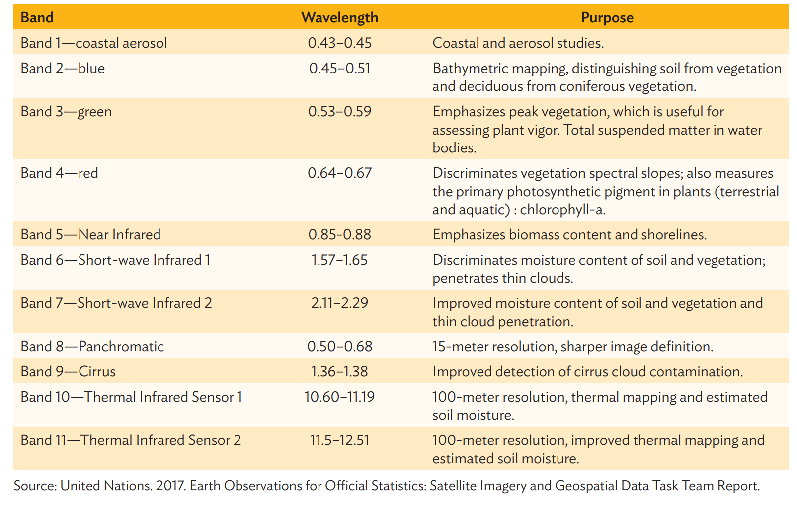

Satellite Imagery
Daytime Satellite Imagery
Different types of satellites and their spatial resolution
Satellite images are obtained from earth-observing systems. In general, the three main types of these systems, based on the altitude of their orbit, are geostationary (GEO) satellites, low Earth orbit (LEO) satellites, and medium Earth orbit satellites.
GEO satellites stay positioned over the same spot on the Earth, with a highest altitude of about 36,000 km. This enables them to have greater Earth surface coverage, but with an increasingly skewed pixel towards the edge of the sensor coverage. GEO satellites were originally designed for meteorological use. An example of such a satellite is the HIMAWARI-8, which is positioned over Indonesia and can cover half the globe, having the highest spatial resolution of 500 meters (m) with images taken at 10-minute intervals.
LEO satellites are positioned relatively close to the Earth’s surface at an altitude of 400 km to 800 km. These satellites can complete their rotation around the earth in about 90 minutes as they travel through a fixed orbit at around 28,000 km per hour. LEO satellites have wider coverage toward the poles, instead of at the equator. Being closer to earth allows these satellites to have higher spatial resolution. The resolution of LEO satellites can be as high as 30 centimeters per pixel for captured images in black and white or panchromatic, while commercially available images in color or multispectral bands can have about 1 m per pixel. Some popular publicly available LEO sensors are the Moderate Resolution Imaging Spectroradiometer (MODIS) and Landsat; with spatial resolutions of 250 m, 500 m, and 1000 m for MODIS, and 30 m for Landsat. These sensors have data applications that are well documented and have been covered by peer-reviewed literature. Meanwhile, the Sentinel-2A and 2B satellites, operated by the European Satellite Agency, have spatial resolutions of 10 m to 60 m, depending on the band.
Medium earth orbit satellites are commonly used on navigation, communication, and geodetic or space satellites. They are positioned at approximately 20,000 km above the Earth, between GEO and LEO satellites.

Satellite Images used in previous research
- Previous studies have used publicly available images from Landsat 8 (with 15 m resolution after pansharpening) and Sentinel 2 (with 10 m resolution). In identifying which specific area an image belonged to, its center was used as reference point.
Data preparation of Daytime Images
- Collect cloud-free daytime images or with least amount of cloud cover
- Panshrapen the images to enhance the resolution of the images. Pansharpening produces a single high-resolution, color, multiband RGB image by combining high-resolution panchromatic images (black and white but sensitive to colors) with lower-resolution, multispectral band images. This is achieved by increasing the pixel-per-unit area of the multispectral band RGB image, transforming the RGB color scheme into a hue saturation value, and changing the value to the pixel intensity of the panchromatic image. The original Landsat images with 30 m resolution were converted to 15 m resolution after pansharpening
- We should isolate the images that render highest loss, to prevent contamination of the input dataset. These images are very cloudy, with no recognizable land or urban areas, which could render the model inaccurate in predicting class and training incorrect features. Such images were caused either by weather disturbance or technical problems with the sensor’s camera, and should be isolated from further training.
- Data augmentation methods should be used to prevent overfitting. Methods suitable to remote-sensing images are:-
- Vertical and horizontal flipping
- Random lighting
- contrast change within a 10% probability
- Dihedral and symmetric warping
Tools used
- Earth Engine
- Translator library for raster and vector geospatial data formats called Geospatial Data Abstraction Library (GDAL)
Data on Night Lights
- Images from Visible Infrared Imaging Radiometer Suite (VIIRS) which provides publicly accessible earth observation images at night for the entire globe.
- Data processing is required to ensure consistency of the resolution of night light data with the daytime satellite imagery in preparation for the CNN modelling
- For a more effective training of the CNN model, actual values of intensity of lights were batched into discrete groups. Similarly, a Gaussian mixture model (GMM) for clustering the values of night light intensity was applied. The GMM assumes that the night light intensity distribution comes from the mixture of k underlying Gaussian or Normal distributions. A histogram of the radiance values was evaluated to arrive at the set of Normal distributions that best fit the data